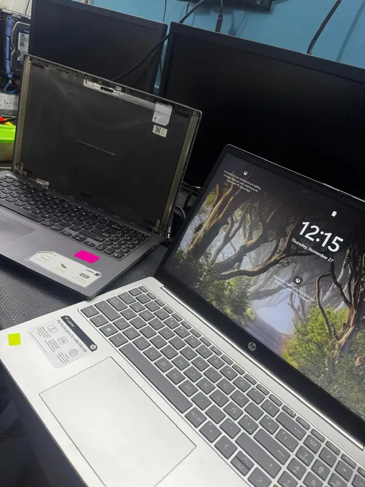
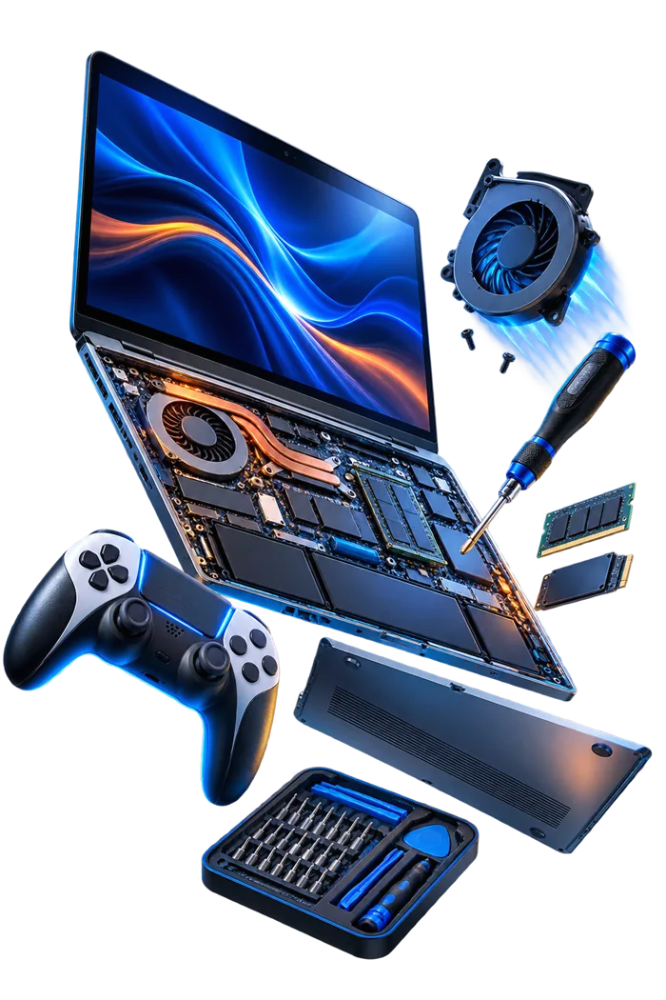
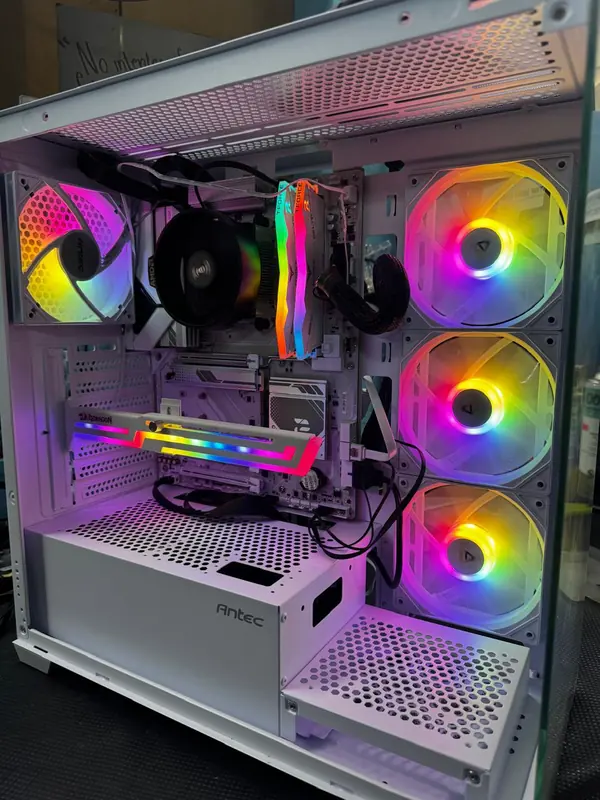
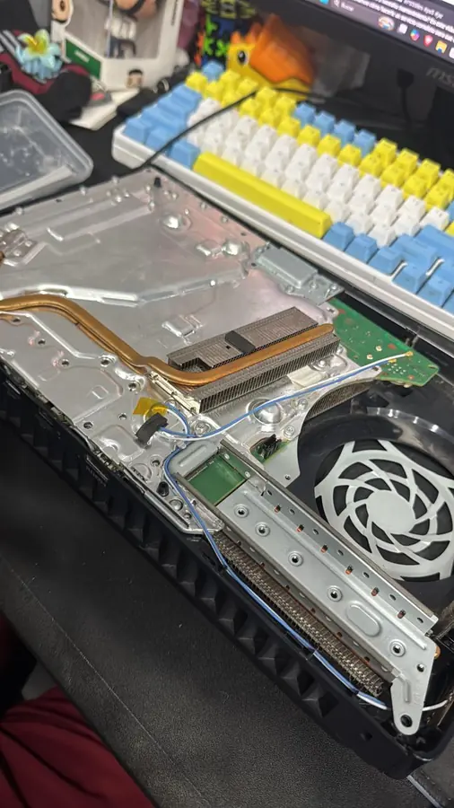
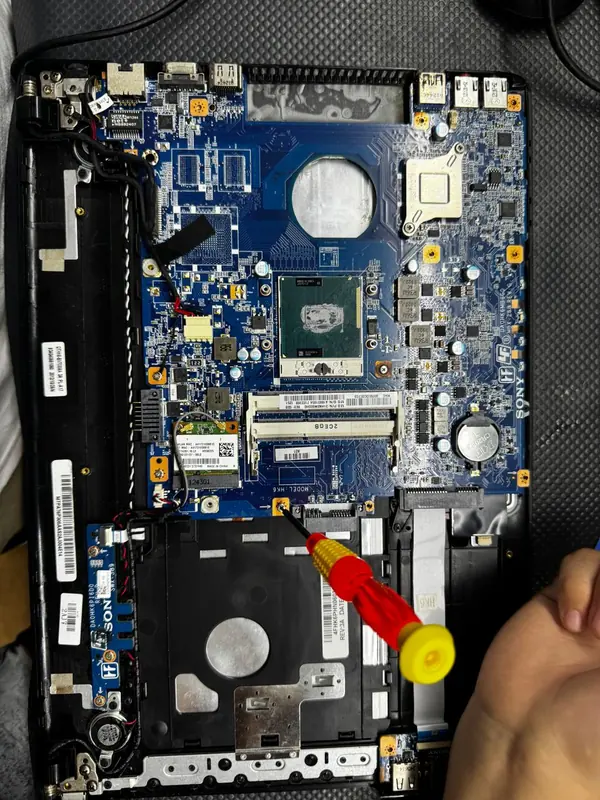
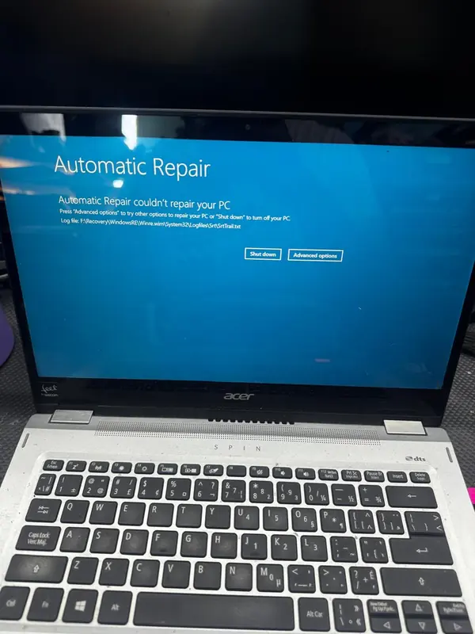
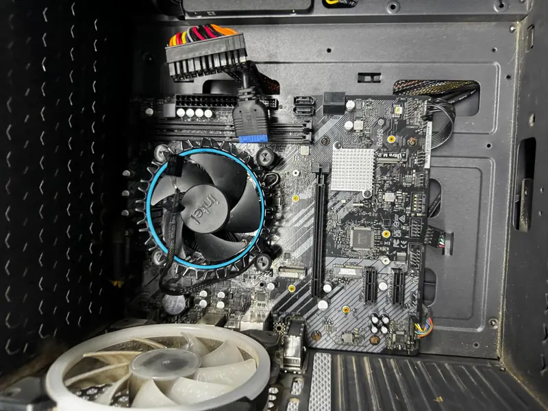

LaptopsDiagnóstico y puesta a punto
DIAGNÓSTICO ANTES DE REPARAR
Revisamos laptops, computadoras y consolas con comunicación clara. Primero identificamos la causa; después te explicamos el trabajo recomendado.

Fotografías reales de diagnósticos, mantenimientos y equipos atendidos por AW-RiseCR.






Limpieza interna, revisión térmica y cambio de pasta cuando aplica.
Diagnóstico, memoria, almacenamiento y optimización básica.
Limpieza interna, ventilación, temperatura y diagnóstico.
Describes la falla y sus antecedentes.
Revisamos el equipo e identificamos la causa probable.
Compartimos el resultado antes de continuar.
Realizamos lo acordado y verificamos funcionamiento.
El costo, si aplica, se confirma antes de recibir el equipo y depende del tipo de revisión.
Depende de la falla, las pruebas y la disponibilidad de repuestos. Te informamos antes de proceder.
Sí. Siempre recomendamos mantener respaldo de la información importante antes de cualquier servicio.
El mensaje se abrirá en WhatsApp con la información organizada.